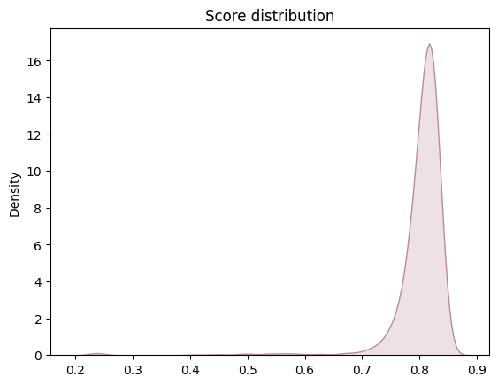
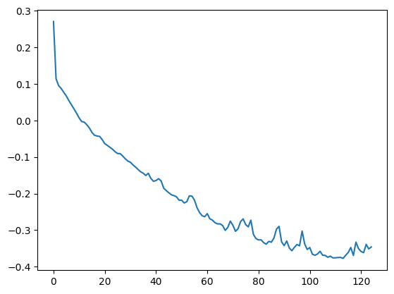
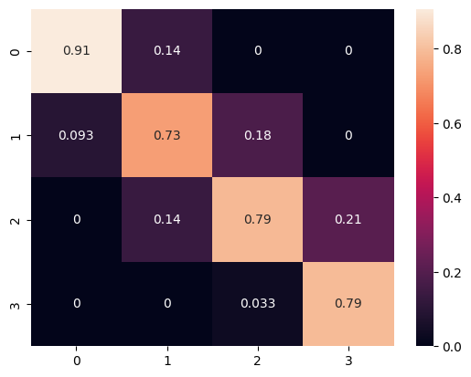

Our Second model selection
Details about your secondary model selection.
We selected the Multi-Layer Perceptron (MLP) classifier for our model selection process due to its several advantages over other models:
- Ability to Capture Non-Linear Relationships: MLPs are capable of capturing non-linear relationships in the data thanks to their multi-layer neural network structure, making them suitable for our task where the relationship between phone specifications and price range may not be linear.
- Flexibility in Architecture: MLPs allow flexibility in architecture design, including the number and size of hidden layers. In our case, we designed a network with multiple hidden layers and varying sizes to accommodate the complexity of phone specifications.
- Handling Large Datasets Efficiently: MLPs can efficiently handle large and complex datasets, which is beneficial for our task where we have a plethora of phone specifications to train the model.
- Built-in Regularization: MLPs come with built-in regularization methods, such as the alpha regularization parameter we utilized, which helps prevent overfitting by penalizing large weights in the network.
- Proven Performance in Classification Problems: MLPs have demonstrated good performance across a wide range of classification problems, giving us confidence in their ability to accurately predict phone price ranges based on provided specifications.
Information on validation methods and the metrics employed.
For our machine learning model, we are using the holdout validation method, where we split our dataset into a training set (70%) and a test set (30%).
To assess the performance of our model, we implemented rigorous validation methods along with the accuracy metric. This metric was chosen because all classes carry equal weight in our classification problem. Additionally, we ran the validation code 1000 times to obtain a more robust distribution of the metric. On average, our accuracy hovers around 0.80, indicating a high level of precision in classifying the samples
distribution of accuracy
loss function
confusion matrix Normalize pred
Preliminary conclusions drawn from your analysis to date.
Por supuesto, aquí tienes una versión revisada: "In conclusion, our MLP classifier has shown promising performance in predicting the price range of mobiles from 0 to 3, where 0 represents the least expensive and 3 the most expensive. Upon analyzing the confusion matrix, we observe strong predictive accuracy, correctly categorizing mobiles in price range 0 with 91% accuracy, range 1 with 73% accuracy, range 2 with 79% accuracy, and range 3 with 79% accuracy. However, we note a minor issue where mobiles in range 2 are occasionally misclassified as belonging to range 1, occurring approximately 18% of the time. This highlights an area for potential refinement to improve overall model accuracy and reliability."
How does this model compare to the first one in terms of metrics?
.